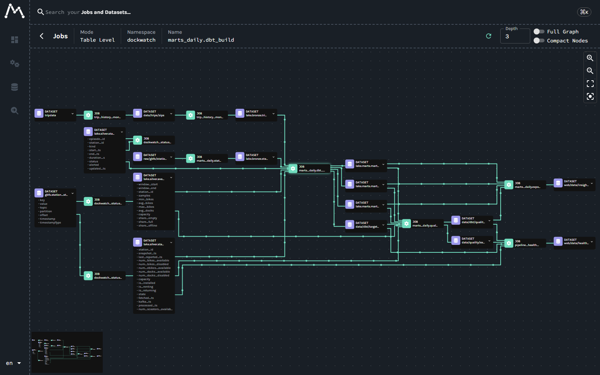

Pipeline
How healthy the data pipeline behind DockWatch is: latency, throughput, freshness and data quality.
See live station statusNot published yet
Pipeline health is not published yet. It appears after the hourly pipeline_health run has measured the lake.
See live station statusCouldn’t load pipeline health
Pipeline at a glance
p95 latency
Loading…
The 95th percentile of fetch-to-silver time (fetched_ts to processed_ts) in the worst minute of the last hour in which data reached silver.
Events per minute
Loading…
Station updates published to Kafka per minute, averaged over the last hour in which data reached silver.
Consumer lag
Loading…
Records published to Kafka but not yet processed into silver at the end of the newest minute (as the lake sees it).
Freshness
Loading…
Time from the newest row processed into silver to when this health file was written.
Loading…
Latency, fetch to silver
Loading…
- p50
- p95
- 5 min SLA
Loading…
Events per minute
Loading…
Loading…
Freshness per table
Loading…
| Table | Last commit | Age | Files | Status |
|---|
Loading…
Data quality
Loading…
| dbt test | Result |
|---|
Loading…
Great Expectations on silver
Loading…
| Check | Column | Result | Found |
|---|
No Great Expectations results yet.
Loading…
Compaction
Loading…
Loading…
Lineage
Kafka’s station feed flows through Spark into silver; silver and trip history feed dbt’s three marts, and the quality gate checks the marts and silver before the insights export.

| Job | Reads | Writes |
|---|---|---|
trip_history_monthly.download | s3://baywheels-data/tripdata | data/trips/zips |
trip_history_monthly.load | data/trips/zips | lake.bronze.trips, lake.metrics.trip_loads |
marts_daily.stations | s3://dockwatch/raw/gbfs/station_information | lake.bronze.station_information |
marts_daily.dbt_build | lake.silver.station_status, lake.silver.availability_5m, lake.silver.station_episodes, lake.bronze.trips, lake.bronze.station_information | lake.marts.mart_station_availability_daily, lake.marts.mart_rebalancing_need, lake.marts.mart_trips_vs_availability, data/dbt/target/run_results.json |
marts_daily.quality_gate | lake.marts.mart_station_availability_daily, lake.marts.mart_rebalancing_need, lake.marts.mart_trips_vs_availability, lake.silver.station_status, lake.silver.availability_5m, data/dbt/target/run_results.json | data/dbt/quality_gate.json, data/quality/expectations.json |
marts_daily.export | lake.marts.mart_station_availability_daily, lake.marts.mart_rebalancing_need, lake.marts.mart_trips_vs_availability, data/dbt/quality_gate.json | web/data/insights |
pipeline_health.minutely | lake.silver.station_status | lake.metrics.pipeline_minutely |
pipeline_health.export | lake.metrics.pipeline_minutely, lake.silver.station_status, lake.metrics.maintenance_runs, data/dbt/quality_gate.json, data/quality/expectations.json, data/dbt/target/run_results.json | web/data/health.json |
The streaming job’s Spark writes, from the OpenLineage Spark listener:
dockwatch_status_stream.reads gbfs.station_status, writes lake.bronze.station_statuswrite_to_data_source_v2. lake_bronze_station_status dockwatch_status_stream.reads gbfs.station_status, writes lake.silver.station_statuswrite_to_data_source_v2. lake_silver_station_status dockwatch_status_stream.reads gbfs.station_status, writes lake.silver.availability_5mwrite_to_data_source_v2. lake_silver_availability_5m dockwatch_status_stream.merges into lake.silver.station_episodes; the MERGE runs in foreachBatch, so it shows only its own table as inputreplace_data. lake_silver_station_episodes